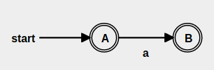
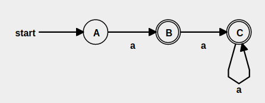
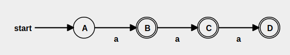
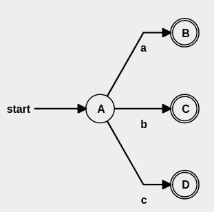

Multi regex¶
Searching sequences using RegEx language¶
%cd ../lib
/my/dev/github/multi_regex/lib
%pwd
'/my/dev/github/multi_regex/lib'
import sys
sys.path.extend(["../lib"])
from regex_nfa import *
Multi Sequence REGEX engine¶
I have a project where I’m storing Sequences in a graph database which for the outside apps are opaque. So I needed to some way to query the data. I tried a sort of template-search-language, but it quickly became clear it is unmanageable. After some experimenting I decided to adopt Regex-like language for searching.
I found a very nice tutorial for implementing RegEx using finite automata (NFA).
Implementing a Regular Expression Engine
Of course this implementation is very basic and is written in java-script, I need one written in python. But second and more important problem is that this engine matches a single string against the regex.
What I require is the ability to apply regex against thousands or may be millions of sequences at once. I meant SEQUENCE not just a STRINGS /which is just sequence of characters/. I also need a support for Sequences where the items can be integers, characters, words, sentences … etc.
The major difference between basic regex matching (BRM) and this more advanced multi-sequence-regex (MSRM) is that in BRM we advance one step (all parallel states) and one character (single sequence) at a time which is much more simple to implement.
In MSRM the advance is still one-step for the regex, but for every parallel-state there are multiple sequences that can match.
For example lets see if we search the words file in linux :
> grep ^w /usr/share/dict/words | wc -l
2329
> grep ^wh /usr/share/dict/words | wc -l
360
if we match against the following regex /wh.+/, the first step will return 2329 sequences/words (which is alot, for BRM it will be just one), the second step we get back 360.
The expectation is that incremental search will be faster than a loop that match every sequence one by one.
BTW there is option to set upper limit on how many items to select at every step, so if you get too many results you can cap them up.
There is one more option which allows you to start matching after a specific prefix/head, the idea here is to match the head as a normal match and the rest of the sequence using the regex. This way we lower the the number of comparisons dramatically, because the biggest number of results are normally at the beginning.
Features¶
The tutorial mentioned above provides implementation only for basic operations i.e. concatenation, closure:*, union:|
But to have usable RegEx engine we need at least : .,?,+,{n,m} and [abc]
Implementation¶
Before I code the main engine I would need a functionality to convert the regex from infix to postfix which is required input by the Thomphson NFA algorithm described above. I use modified version of the following code :
Once in postfix format I parse the expression to NFA which is then used to guide the matching process.
Here is the process :
Input: Regex string
Insert concatenation operator where needed and return the result as a List (we are matching sequences not just strings) : insert_concat()
Convert Infix expression to Postfix : infix2postfix()
Convert Postfix expression to NFA structure : to_nfa()
Walk over the NFA states guided by the matched sequence : match_one()
Here are the new operations that I implemented in addition to the basic ones.
Zero or One : ?¶

If you read the tutorial above you would know a state can be either intermediate or end state and the transitions can be Symbol or Epsilon.
So to implement Zero or One item match, we need two end-states with Symbol transition. This way if we can exit trough the first state we cover the zero match case OR we can match one Symbol and exit, which covers the second case.
One or More : +¶

Here we need the first node to be non-end-node, so that we get at least one match.
My implementation uses Symbol match followed by closure(*) operator which is similar to the above diagram but more general.
From n to m occurrences : {n,m}¶

For this operator and character-class I had to modify infix to postfix conversation to treat ‘{n,m}’ and ‘[abc]’ sub-strings in the regex as atom instead of a list of characters. Once this is handled the postfix to nfa conversation have access to the whole operator parameters and can build the correct sub-graph.
This implementation relies on the Union operator f.e.
a{1,3} is implemented as a|aa|aaa
a{2,4} is implemented as aa|aaa|aaaa
so what we see from this example {1,3} is that we need 1 non-end state followed by 2 end states. And for {2,4} we need 2 non-end states followed by 3 end states.
In other words {n,m} case have to have N-non-end states followed by (M+1-N) end-states.
Character class : [abc]¶

For character class again we use a Union. F.e.
[abc] is implemented as a|b|c
The diagram this time is parallel i.e. either of the Symbol transitions will be a match. My implementation differs abit, because I need just one final node not three, so …..
I changed the 3 Symbols to non-END-nodes. Connected to all three Symbol nodes is one additional END-node using Epsilon-transitions. This way I keep the functionality described above and have one start and one end node, which is required to interconnect nfa-states.
Match any item : .¶
One thing the basic regex misses is a way to “match any character” i.e. the dot operator. It is not implemented as separate operator but as condition in the nodes walk algorithm.
`if not state.hasT or (symbol not in state.T and state.sym != ANY ) : continue`
Now that I explained some details in the implementation lets see how they work in practice.
There are two methods you can use, the first one is match_one() which implement the original basic algorithm with the extensions I discussed by providing functionality to match single sequence. The second one simply called match() does the multi-sequence matching.
Lets try some examples :
n = Regex()
n.match_one('abc', 'abc')
True
n.match_one('abc', 'abcd')
False
n.match_one('a+', 'aaaa')
True
n.match_one('(a|b)+', 'abab')
True
n.match_one('a{1,3}', 'aa')
True
n.match_one('[abc]+', 'ababac')
True
Now lets try sequences :
n.match_one([1,2],[1,2])
True
n.match_one([1,'+'],[1,1,1,1])
True
There is also a shortcut format for sequences … instead of quoting every item, just create a list with single item that is a string … here is the normal way :
n.match_one([1,'|',2,'|',3],[2])
True
… and here is the shortcut way :
n.match_one(['1,|,2,|,3'],[2])
True
n.match_one(['(,1,|,2,|,3,),+'],[1,1,2,2,3,3])
True
n.match_one(['(,1,|,2,|,3,),+'],[1,2,3,1,2,3])
True
or we can match words …
n.match_one(['hi','+'],['hi','hi','hi'])
True
n.match_one(['hi','?'],['hi'])
True
Multi-match¶
The multi match algorithm is similar to the basic one. The difference is in the last step :
Input: Regex string
Insert concatenation operator where needed and return the result as a List (we are matching sequences not just strings) : insert_concat()
Convert Infix expression to Postfix : infix2postfix()
Convert Postfix expression to NFA structure : to_nfa()
Walk over the NFA states guided by function, which given a prefix returns a list of sequences of the format prefix+next_item : match()
it is a three-step-loop of walking over regex-states, matching-sequences and filtering
First we need a sequence data source and function that provides prediction given prefix. The data store that imitate a database in our case will be simple lists.
from seqs_store import *
words
['who', 'why', 'when', 'where', 'whom', 'which', 'what', 'word', 'while', 'whole', 'whammy', 'with', 'woman', 'work', 'abc']
seqs
[[1, 2, 3], [1, 2, 3, 4], [1, 3, 4], [1, 2, 5, 6], [1, 2, 5, 7], [1, 2, 3, 4, 5], [1, 1, 3, 4]]
sents
[['hi', 'world'], ['hello', 'world'], ['howdy', 'world'], ['hi', 'buddy'], ['hey', 'ho'], ['hi', 'hi']]
To search we provide a prefix and the db-list. So when the prefix is ‘w’ we expect to get first two characters of every string that starts with ‘w’ … in the regex matching we use this function to walk step by step trough the matching sequences.
db_search(prefix='w', seqs=words)
['wh', 'wo', 'wi']
db_search(prefix='wh', seqs=words)
['whe', 'why', 'wha', 'whi', 'who']
db_search(prefix='why', seqs=words)
['why.']
db_search(prefix='whe', seqs=words)
['when', 'wher']
We can also do the same with sequences repsented with lists.
db_search(prefix=[1], seqs=seqs)
[[1, 3], [1, 1], [1, 2]]
db_search(prefix=[1,2], seqs=seqs)
[[1, 2, 3], [1, 2, 5]]
… or search sentences
db_search(prefix=['hi'], seqs=sents)
[['hi', 'hi'], ['hi', 'buddy'], ['hi', 'world']]
So we will use this function to represent a DataBase which stores sequences ..
Now we can call match() against this “data store” for this we provide regex and the function.
We should use lambda or functools.partial() when passing the function, because the prefix is provided later by the match-process not directly here.
It looks like this :
n.match(regex='w.+', match_prefix_fun=partial(db_search,seqs=words))
['why.', 'who.']
… with the ‘end’ option we specify a symbol that marks the end of the sequence. We need this so that the engine can distinguish full sequences vs partial ones, as we are progressing with the search.
n.match(regex='wh..', match_prefix_fun=partial(db_search,seqs=words), end='$')
['what$', 'whom$', 'when$']
n.match(regex=[1,'.',3,'.'], match_prefix_fun=partial(db_search,seqs=seqs))
[[1, 1, 3, 4, '.'], [1, 2, 3, 4, '.']]
One drawback on the current implementation is the the match() is non-greedy i.e. it stops matching once it finds the first correct match. Greedy match may “explode” the search.
To counter that …..
I added two more options to limit the explosion of results as the program walks trough the regex.
Using the “limit” option as the name implies limits the maximum number of matched items at every step. The drawback of this option is that it may cut some results you may expect from the final results.
n.match(regex='wh..', match_prefix_fun=partial(db_search,seqs=words), limit=3)
['what.']
The other option is “head” which does straight (non-regex) match on the initial characters/items and the regex starts matching after that. This way you can skip result-exploision which is most probable in the beginning.
n.match(regex='h..', match_prefix_fun=partial(db_search,seqs=words), head='w')
['what.', 'whom.', 'when.']
WORDS example¶
Lets use the words file as example tests :
with open('/usr/share/dict/words') as f : ww = [ l.rstrip() for l in f.readlines()]
n.match(regex='wh..', match_prefix_fun=partial(db_search,seqs=ww))
['what.', 'whir.', 'whet.', 'whip.', 'when.', 'whey.', 'whim.', 'wham.', 'whoa.', 'whom.', 'whew.', 'whys.', 'whit.', 'whiz.']
n.match(regex='wh.+', match_prefix_fun=partial(db_search,seqs=ww))
['why.', 'who.']
n.match(regex='w(h|o).', match_prefix_fun=partial(db_search,seqs=ww))
['wok.', 'won.', 'why.', 'woo.', 'who.', 'woe.', 'wot.', 'wow.']
TODO¶
Currently regex like these are not supported, yet :
/(ab){1,3}/, /[abc]{1,3}/
One easy addition will be to add support for real numbers. It will require a ‘range-checker’ that will match close numbers as equals.
This idea can be enchanced with a similarity function passed as parameter.